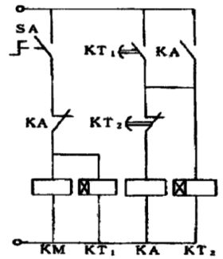

| X2 T21 |-----| |----------|/|----------( Y20 ) | | | | T20 | ------|/|----------( T21 K40 ) | | T21 |-----| |-----------------------( T20 K20 ) | X2 T26 |-----| |----------|/|------------( T25 K20 ) | | T25 |-----| |-------------------------( Y20 ) | | | | | --------------------( T26 K40 )
定时启停硬件电路

| X0 M0 |-----| |----------|/|--------------------( Y0 ) | | | | | ---------( T0 K100 ) | T0 T1 |-----| |----------|/|--------------------( M0 ) | | | M0 | |-----| |---------------------------------( T1 K50 )